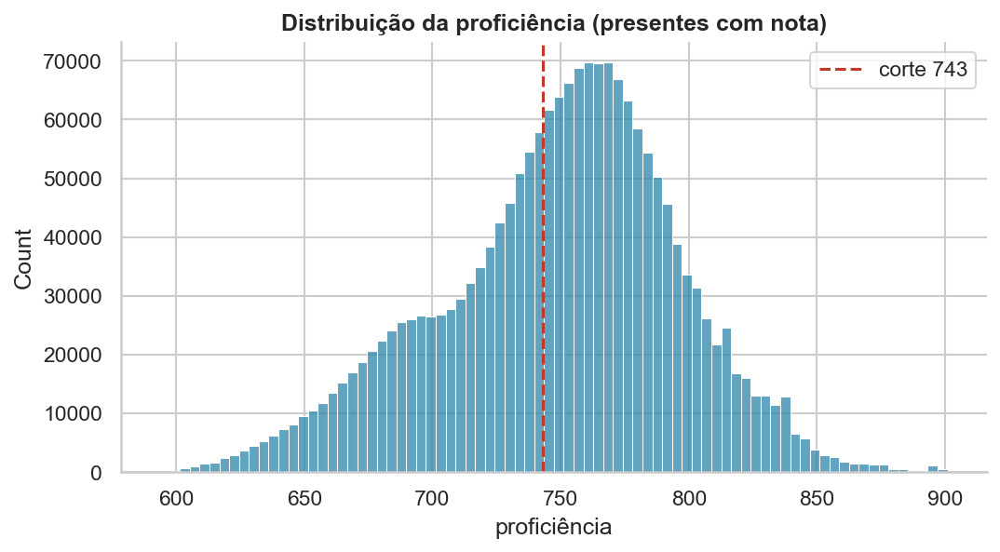
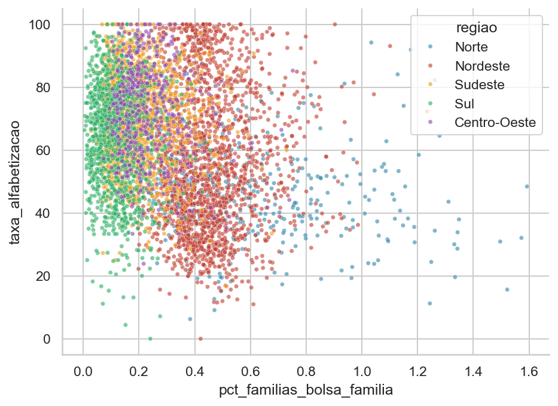
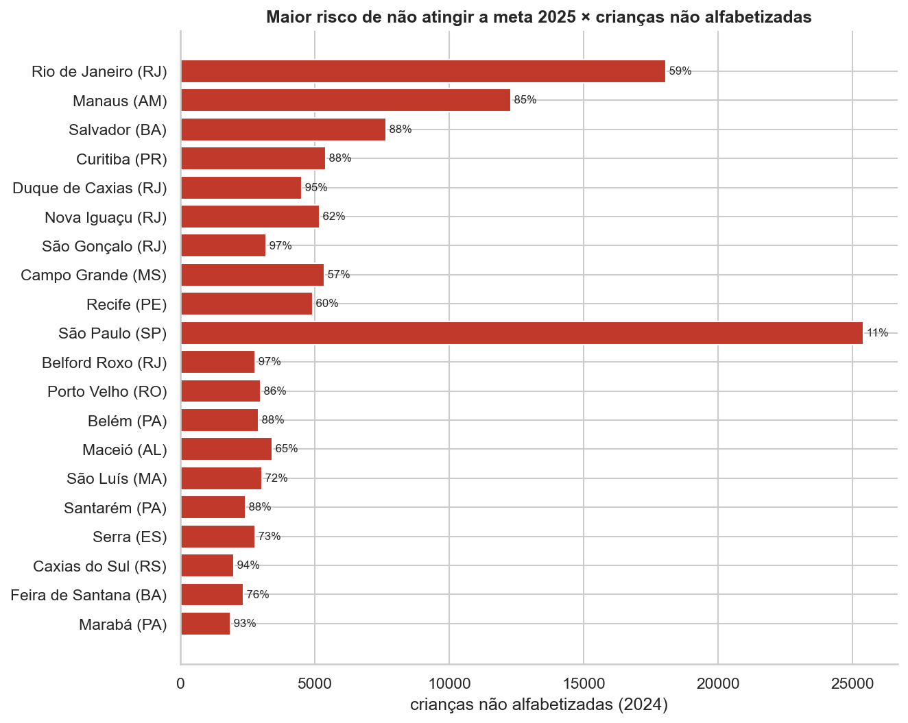

Hoje o país só descobre quem ficou para trás depois que a prova acontece. Este trabalho antecipa esse resultado, cidade por cidade.

4 em cada 10 não chegam à régua.
Oito fontes públicas, todas abertas e gratuitas, entram numa tabela só — uma linha por município.
Uma regra que protege o resultado: todo dado de município é do ano anterior à prova. Usar dado do mesmo ano seria entregar ao sistema uma resposta que, na vida real, ainda não existiria no momento da previsão.
Nenhuma previsão acerta sempre. Dá para decidir, porém, qual dos dois erros a gente prefere cometer.
Custa uma visita técnica que não precisava acontecer.
Custa uma criança que ninguém foi ajudar.
Por isso o sistema foi ajustado para o primeiro: de cada dez lugares realmente em risco, ele encontra oito.
O preço disso: de cada dez alarmes que ele dispara, cinco são falsos. Um sistema que errasse menos alarmes deixaria mais criança de fora — e essa troca é uma decisão de política pública, não de estatística.
Duas crianças tiram notas diferentes. Essa diferença vem de elas estarem em cidades diferentes, em escolas diferentes, ou é diferença entre colegas da mesma sala? Eu medi os três.
O sistema só consegue enxergar os 25% azuis — cidade e escola. Os 75% vermelhos são diferenças entre colegas da mesma sala, e a base não tem nenhuma informação da criança para explicá-los. Esse é o teto do que dá para prever, e eu prefiro dizer isso do que esconder.
Para descobrir, eu tiro uma informação por vez do sistema e meço o quanto a previsão piora sem ela. Quanto mais piora, mais aquela informação importava.
Onde a criança estuda pesa muito mais do que como é o prédio. Peso relativo ao primeiro colocado. O esgoto chega a ficar negativo — ou seja, não carrega informação nenhuma.
Olhando o país inteiro, onde há mais famílias no Bolsa Família a nota tende a ser menor. Parece uma conclusão pronta. Mas o mesmo cálculo, feito dentro de cada estado, muda — e às vezes troca de sinal.

O que derruba a nota é a pobreza da região, não o programa. Norte e Nordeste concentram as duas coisas ao mesmo tempo, e o número nacional mistura uma com a outra. Nenhum dado deste projeto permite dizer que o Bolsa Família causa nota baixa.

Separei as 5.450 cidades pelo desempenho das suas crianças. Elas não se espalham por igual: caem em três blocos bem distintos, e cada bloco pede uma ação diferente do gestor.
Duas mil cidades concentram quase 60% de todas as crianças fora da régua. E os grupos não seguem o mapa das regiões: a cauda crítica e o alto desempenho têm os dois o Nordeste como região mais comum.
Orçamento público é curto e vai continuar curto. Espalhar recurso por 5.517 cidades ao mesmo tempo não funciona. O que este trabalho entrega é dado público — que já existe e já está pago — virando uma lista de onde ir primeiro.
Antes de gravar: F para tela cheia e confira que a fala está escondida — ela não deve aparecer no vídeo.